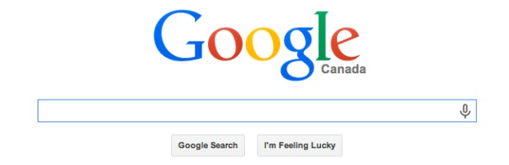
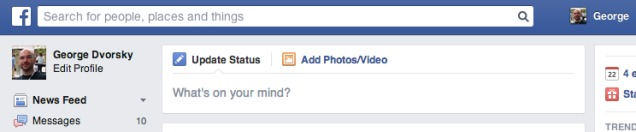
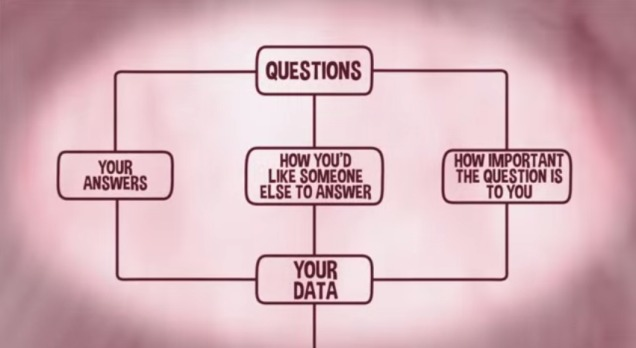
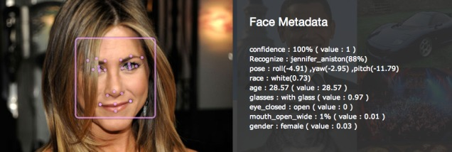
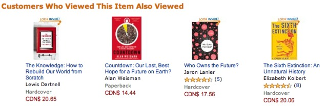
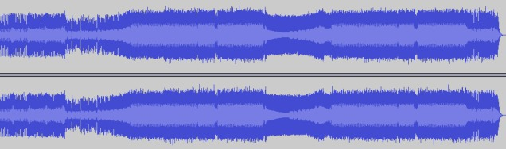

アルゴリズムは今日の私たちの生活にとって非常に重要であり、どれだけ強調してもし過ぎることはありません。アルゴリズムは仮想世界のいたるところに存在し、金融機関から出会い系サイトに至るまで及んでいます。しかし、他のアルゴリズムと比べて、私たちの世界をより大きく変え、支配しているアルゴリズムもあります——本稿では、その中で最も重要な10種類のアルゴリズムを挙げます。
アルゴリズムの内容を正式に紹介する前に、基本事項を簡単に復習しましょう。明確な定義はありませんが、コンピュータ科学者はアルゴリズムを「操作の順序を定義した規則の集合」と説明しています。アルゴリズムは、コンピュータに問題の解決方法や所定の目標の達成方法を指示する一連の順序付き命令です。アルゴリズムを理解する良い方法は、アルゴリズムをフローチャートとして視覚化することです。
1. Google Search 谷歌搜索
少し前まで、検索エンジンはインターネット時代の覇者となっていた。検索エンジンとともに台頭してきたのは、GoogleとGoogleが提唱したPageRankアルゴリズムである。

現在、米国の主要検索市場において、Googleの市場シェアは66.7%に達し、次いでMicrosoft（18.1%）、Yahoo!（11.2%）、Ask（2.6%）、AOL（1.4%）となっている。疑いの余地なく、Googleは検索市場を支配しており、私たちの多くがGoogleをインターネット利用の主要な手段としている。
PageRankの仕組みは2つの構成要素に依存している。1つは「スパイダー」または「クローラー」と呼ばれる自動プログラムであり、もう1つはキーワードインデックスとその位置である。このアルゴリズムは、あるWebページの関連リンクの数と質を計算することで、そのWebページの重要度をおおまかに算出する。アルゴリズムの基本的な考え方は、重要なページほど多くのリンクがそのページを指すというものである。これは基本的な人気投票である。これに加えて、PageRankアルゴリズムは、ページ内のキーワードの出現頻度と出現位置、およびそのページが公開された時期も考慮する。
2. Facebook News Feed
認めたくはないが、Facebookのニュースフィード（News Feed）は私たちが最も時間を無駄にするお気に入りの場所だ。個人の設定ですべての出来事を表示し、すべての友達のニュースを時系列で更新するように設定しない限り、目にするニュースは前処理された選択であり、この前処理はFacebookのアルゴリズムがあなたのために特定のニュースを選んで表示するものである。

どのニュースの内容が最も興味深いかを決定するために、このアルゴリズムは多くの要素を考慮する。例えば、コメント数、投稿者（そう、コンテンツに「人気」の人物ランキングがあり、その「人気」人物とはあなたと最も多く交流した人々のこと）、投稿タイプ（写真、ビデオ、ステータス、アップデートなど）である。
3. OKCupid カップルマッチング
オンライン出会い系は現在、20億ドル規模の産業です。Match.com、eHarmony、OKCupidなどのサイトの発展により、この産業は2008年以来毎年3.5%ずつ拡大しています。アナリストは、この産業の加速的な発展は今後5年間も続くと考えています——もっともなことです：これはカップルが出会う効率的な方法だからです。婚活サイトは単に成功した結婚を増やしただけでなく、個人の好みや傾向に応じて潜在的なカップルをマッチングするのも得意です。もちろん、そのようなマッチングは完全にアルゴリズムによって行われています。

例としてOKCupidを取り上げます。OKCupidは無料の婚活サイトで、共同創業者の一人はハーバード大学の数学者クリスチャン・ラダーです。OKCupidは徹底的に分析的な方法でデートを成立させており、ユーザーからできる限り多くの情報を引き出そうとしています。OKCupidのマッチングアルゴリズムは、単に共通の趣味を一致させるだけでなく、各質問には、その質問がユーザーとその潜在的な相手にとってどれほど重要かを測るための重みが与えられています。これがいわゆる「違いが素晴らしさを生む」ということであり、OKCupidが最も効率的な婚活サイトの一つである理由の一つです。
4. NSAのデータ収集、解読、および暗号化
私たちはますます人間ではなくアルゴリズムによって観察されるようになっています。エドワード・スノーデンのおかげで、アメリカ国家安全保障局（NSA）とその協力者たちが何百万人もの無実の市民を密かに監視してきたことを私たちは知っています。最近公開された文書によれば、ファイブ・アイズによって多くの監視プログラムが実施されてきました。ファイブ・アイズは、アメリカ、オーストラリア、カナダ、ニュージーランド、イギリスで構成される情報組織です。彼らは私たちの携帯電話、電子メール、ウェブカメラの映像、位置情報を監視してきました。同時に、「彼ら」とはつまり彼らのアルゴリズムのことです。あまりにも多くのデータがあり、人間が収集し解読することはできません。

興味深いことに、NSAは実際には私たちのデータを「収集」していないと主張しています。1982年の手順書によれば、「情報の『収集』とは、情報が国防総省の情報機関によって職務範囲内で収集され、使用されることを指します」。また「電子システムによるデータ収集とは、情報が収集され、理解可能な形式に変換されることを指します」。ガーディアン紙のブルース・シュナイアーは次のように説明しています：
「つまり、あなたの友人が自宅に何千冊もの本を持っていると仮定しましょう。NSAの解釈によれば、彼は本を『収集』しているわけではありません。彼が実際に読んでいる本だけが彼の『収集した』本であり、彼が本を他の目的に使っている場合は『収集』しているとは見なされません。」
これにより問題が生じる。なぜなら：
コンピュータアルゴリズムは人々と密接に関係している。コンピュータアルゴリズムが私たちを監視し、個人データを分析していると考えるとき、私たちはアルゴリズムの背後にいる人々について考えなければならない。誰かが私たちのデータを見ているのではないか。実際、彼らができることはまさに監視なのである。
最後に、最も関連性が高いのは米国家安全保障局（NSA）のSuite B暗号アルゴリズムである。これは暗号化、データ交換、デジタル署名、ハッシュ化に使用される強力なアルゴリズム群である。NSAはまさにこのアルゴリズムを利用して、機密および非機密文書を保護している。
5. レコメンドアルゴリズム
AmazonやNetflixのようなウェブサイトは、あなたが購入した本や視聴した映画を記録し、私たちの好みに基づいて商品を推薦する。

多くの自動プログラムと同様に、この21世紀独自の技術には長所と短所の両方がある。このような推薦は時には非常に役立つが、時には的を外すこともある——特に、3歳の娘のために児童書をギフトとして購入した後などは。
PageRankやFacebookのニュースフィードと同様に、こうしたアルゴリズムは「フィルターバブル」と呼ばれる現象を引き起こしています。これは、ユーザーが自分にとって興味のない情報から隔離され、実際にはイデオロギー的な「泡」によって隔離されてしまう現象です。これは、イーライ・パリサーが提唱する「情報決定論」につながります。過去にウェブ上で閲覧した興味が、私たちの未来を決定するのです。
6. Google AdWords
以前のアルゴリズムと同様に、Google、Facebook、その他のウェブサイトはあなたの行動、使用する言葉、検索リクエストを追跡して、それに応じた広告を配信する。GoogleのAdWords——同社の主な収入源——はまさにこのようなモデルで予測を行っており、同時にFacebookも関連する研究に努めている（あなたが最後にFacebookの広告をクリックしたのはいつですか？）
7. 高頻度の株式取引

ずっと前から、金融部門は市場の変動を予測するためにアルゴリズムを使用していましたが、高頻度取引での実践は始まったばかりです。このような高速取引に関わるアルゴリズムはロボットとも呼ばれ、注文をミリ秒単位で判断できます。対照的に、人間は通常、潜在的なリスクに反応するのに少なくとも1秒かかります。そのため、人々は実際の取引のサイクルから次第に排除されつつあります——まったく新しい電子生態系が徐々に形成されつつあります。
しかし、またしてもこれらのアルゴリズムが誤りを引き起こすことがあります。レオ・ヒックマンは次のように説明しています：
例を挙げると、2010年5月6日の「フラッシュクラッシュ」です。このときダウ平均株価は数分以内に平均1000ポイント下落し、20分後に市場は反発しました。このような大幅な急落は今でも完全には説明されていませんが、ほとんどの経済学者はその原因を「競争の底辺」に帰しています。「競争の底辺」の主犯は、高頻度取引を達成するために大規模に使用されたクオンツ取引アルゴリズムです。ウォールストリート・ジャーナルの記者であり『ザ・クオンツ』の著者であるスコット・パターソンは、取引現場でのこれらのアルゴリズムの使用を飛行機の自動操縦に例えました。今日、取引の大部分はアルゴリズムによって自動的に行われていますが、フラッシュクラッシュのような状況が発生した場合には、人間の介入があるべきです。
8. MP3 压缩
データ圧縮アルゴリズムは電子世界に欠かせない重要な存在です。私たちはメディアデータをより速く受け取りたいと望み、同時にハードディスクの容量を節約したいと望みます。そのため、データを圧縮して転送するために多くの方法が考案されてきました。

例えば、1991年にシスコシステムズはCRTPプロトコルを開発しました。1987年には、ドイツの研究者が今日広く使用されているMP3形式を発明し、オーディオのサイズを元の10分の1にまで縮小しました。この圧縮形式は音楽産業に革命をもたらしました（良し悪しの影響があります）。
9. 予測分析ソフトウェア
現在この技術は私たちの世界を支配してはいませんが、すぐに支配することになるでしょう。ますます多くの警察機関が予測分析技術を使用しています——映画『マイノリティ・リポート』を思い起こさせる新しいツールです。
2010年、IBMの予測分析ソフトウェア（CRUSHと呼ばれ、正式名称はCriminal Reduction Utilizing Statistical History）を利用して、2006年以来メンフィス市の警察署は凶悪事件を30%以上削減したとされており、その中には暴力犯罪の15%削減も含まれている。同時に、ポーランド、イスラエル、英国の都市もこの技術に注目している。現在、ロサンゼルス、サンタクルーズ、チャールストンなどでも試験運用が始まっている。

この技術は、データ収集、統計分析、そしてもちろん最先端のアルゴリズムを組み合わせています。これにより警察は都市の犯罪特性を評価し、潜在的な犯罪の「ホットスポット」を予告できるようになり、「資源を積極的に配置し人員を配分することで、人材と物力の使用効率を高め、公共の安全を向上させる」ことが可能になります。
将来、このシステムは大規模にアナリストの仕事を代替するかもしれません。犯罪行為は、インターネット行動、GPS、個人用電子機器、生体認証、その他の現実の通信手段を監視する精巧なアルゴリズムによって追跡される可能性があります。ますます多くの無人機が、潜在的な犯罪者を追跡し、その身体動作やその他の視覚的な手がかりを分析して彼らの意図を予測するために使用されるでしょう。
10. 调音（Auto-Tune）
最後に、お楽しみとして、現在ではボーカルのピッチ補正はアルゴリズムによって行われています。歌声であれ楽器の音であれ、これらのデバイスは特定の規則の集合を通じてピッチをわずかに変更し、最も近い正確な半音に合わせます。興味深いことに、この技術は元々、エクソンのエニー・ヒルデブランドが地震データを処理するために使用していました。
アメリカの女性歌手シェールの「ビリーヴ」は、ピッチ補正を使用した最初のポップソングと見なされています。